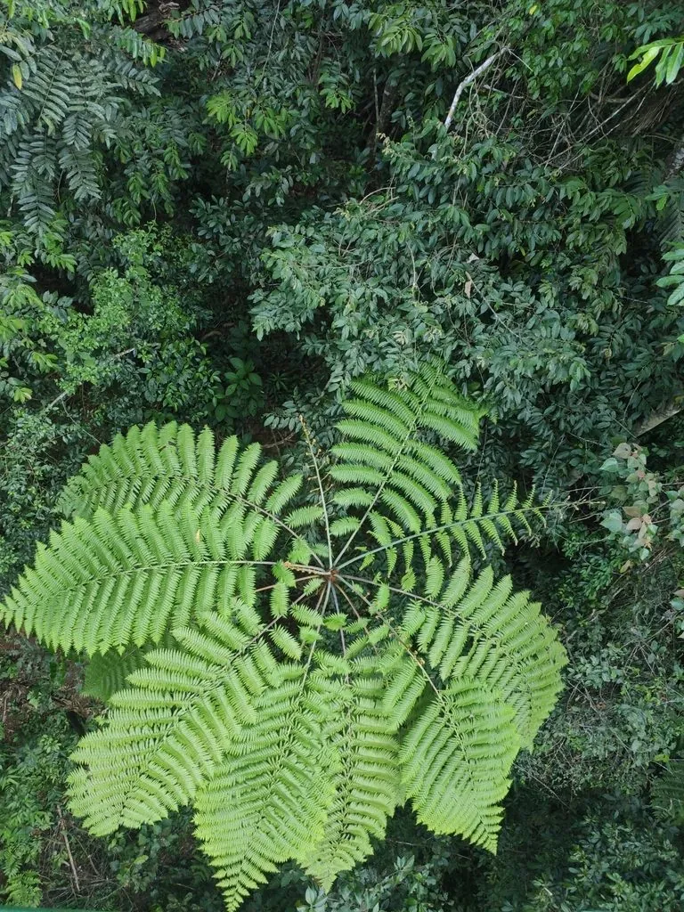

蕨类与裸子植物 · 植物界
白桫椤 Sphaeropteris brunoniana

桫椤科白桫椤属大型树蕨，主干高大、叶柄基部密被白色鳞毛，叶背灰白，是热带雨林中的标志性树蕨。
- 分类
- 门蕨类植物门纲木贼纲目桫椤目科桫椤科属白桫椤属
- 栖息环境
- 海拔 600–1500 米的热带山地雨林与季雨林沟谷，喜温暖湿润
- 地理分布
- 中国云南、西藏东南部、海南及印度、缅甸、越南等地
- 保护级别
- 中国国家二级保护野生植物；森林砍伐使野生种群减少
物种志
白桫椤为大型树形蕨类，主干直立，高 5–10 米，直径 15–25 厘米，表面具叶柄疤痕。叶簇生主干顶端，二回羽状，长 2–3 米，叶柄基部密被白色至淡棕色鳞毛，叶背呈灰白色，幼叶拳卷。孢子囊群圆形，生于小脉分叉处，成熟时褐色。
本种分布于中国云南、西藏东南部、海南及印度、缅甸、越南等地，生于海拔 600–1500 米的热带山地雨林与季雨林，喜温暖湿润、散射光充足的环境。它主干高大、叶背灰白，是热带雨林中最显眼的树蕨之一，常成片生长在沟谷两侧。白桫椤对生境要求严格，森林砍伐与人为采挖使其野生种群减少，桫椤科所有种均被列为国家二级保护野生植物。
形态与习性
- 株高主干高 5–10 米，直径 15–25 厘米
- 叶二回羽状，长 2–3 米，叶背灰白
- 叶柄基部密被白色至淡棕色鳞毛
- 光照喜散射光，忌强光直射
- 水分喜高湿，沟谷环境生长良好
- 土壤疏松肥沃的酸性壤土
- 主要用途园林观赏、热带雨林景观与种质保护
趣味知识
- 白桫椤的叶背呈灰白色，叶柄基部密被白色鳞毛，因此得名“白桫椤”。
- 它的主干可长到 10 米高，是桫椤科中体型最高的种类之一。
- 白桫椤常成片生长在热带雨林的沟谷两侧，形成独特的树蕨景观。
- 它的白色鳞毛能减少水分蒸发，并保护幼叶免受虫害。